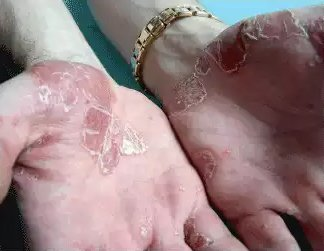

Γεια σας! Ονομάζομαι Δήμητρα Ιωάννου και είμαι 36 ετών. Αποφάσισα τελικά να μιλήσω για την ιστορία μου. Την ιστορία μου για τη αντιμετώπιση της ψωρίασης. Το θέμα είναι αρκετά ευαίσθητο, ειδικά για τις γυναίκες. Δεν είναι εύκολο να συζητάμε γι’ αυτό… Η ψωρίαση είναι μια πολύπλοκη ασθένεια, η οποία έχει όμως και αισθητικό αντίκτυπο. Η ζωή στην κοινωνία, όταν έχεις άσχημα και αντιαισθητικά σημάδια στο δέρμα, μπορεί να γίνει μαρτύριο. Εκτός από τα δυσάρεστα αισθήματα της φαγούρας, του καψίματος και της απολέπισης, χρειάζεται να αντιμετωπίσεις και τα αδιάκριτα βλέμματα και να συνειδητοποιήσεις, ότι μιλούν πίσω από την πλάτη σου. Πολλοί άνθρωποι επίσης θεωρούν, ότι η ψωρίαση είναι μεταδοτική. Συνεπώς, το άτομο, που υποφέρει από ψωρίαση, είναι σχεδόν απομονωμένο από την κοινωνία και δεν μπορεί να ζήσει μια φυσιολογική ζωή… Είμαι σε μια ηλικία, όπου δύσκολα μπορεί να με πληγώσει η γνώμη των άλλων, όμως αυτό αποδείχθηκε πολύ σκληρό ακόμα και για μένα…

Αυτή η ιστορία ξεκίνησε πέντε χρόνια πριν. Μία φορά, έκανα ντους, αλλά μετά ένιωσα κάποιες σκληρύνσεις στο δέρμα, στην περιοχή των αγκώνων. Αυτές ήταν οι πρώτες περιοχές, που επηρεάστηκαν από τη φλεγμονή. Έμοιαζαν με ροζ πλάκες, οι οποίες ήταν σκληρές και με σημάδια απολέπισης. Άπλωσα μια καλλυντική κρέμα πάνω τους. Νόμιζα, ότι ήταν απλά ξηρότητα του δέρματος, αποτέλεσμα της ανεπαρκούς φροντίδας. Θέλω να πω, ότι πάντα φροντίζω τον εαυτό μου και επιλέγω προσεκτικά τα καλλυντικά και τα προϊόντα περιποίησης. Δεν αντιμετώπισα ποτέ κάποια αλλεργία.
Ασυνήθιστοι λεκέδες άρχισαν να μεγαλώνουν μετά από τρεις εβδομάδες και προβληματίστηκα. Πήγα στο δερματολόγο αμέσως. Μετά από μια προσεκτική εξέταση και ανάλυση των αποτελεσμάτων, η διάγνωση ήταν ψωρίαση. Έπαθα σοκ! Ο γιατρός μου συνταγογράφησε τη συνήθη θεραπεία. Ορμονικά φάρμακα (αλοιφές και λοσιόν) και ένα ομοιοπαθητικό πρόγραμμα (μπάνιο με θαλασσινό αλάτι και βότανα). Η θεραπεία έδωσε μόνο προσωρινά αποτελέσματα. Οι λεκέδες αποχρωματίστηκαν και τα υπόλοιπα συμπτώματα (φαγούρα και φλεγμονώδεις αντιδράσεις) «υποχώρησαν». Ωστόσο, όταν σταμάτησα την εντατική φροντίδα και έκανα μόνο συντήρηση, όλα τα προβλήματα επανεμφανίστηκαν. Επιπλέον, φάνηκε, ότι μετά την ορμονική θεραπεία, οι πλάκες άρχισαν να μεγαλώνουν γρηγορότερα και εντονότερα. Όλο αυτό κράτησε περίπου 2.5 χρόνια. Ως αποτέλεσμα, η ψωρίαση επεκτάθηκε σε ολόκληρη την επιφάνεια των δύο μου χεριών. Σοκαρίστηκα, όταν είδα σημάδια της ασθένειας στα πόδια και τους γλουτούς μου! Τότε κόντεψα να τρελαθώ. Η κατάσταση επιδεινώθηκε από τον πανικό μου. Όταν είδα δε τα σχόλια άλλων, που έπασχαν από ψωρίαση, αγχώθηκα ακόμα περισσότερο. Κάποιοι δεν μπορούσαν να θεραπευτούν για 15-20 χρόνια. Άλλοι ζούσαν με αυτό το πρόβλημα όλη τους τη ζωή…
Αγόραζα μανιωδώς διάφορα προϊόντα κατά της ψωρίασης από τα φαρμακεία. Κρέμες, σταγόνες, σπρέι, τα πάντα… Δοκίμασα εναλλακτικές μεθόδους θεραπείας, όπως να πηγαίνω σε ιαματικά λουτρά, με ειδική λάσπη. Μια φορά, δοκίμασα ακόμα και να ξορκίσω την ασθένεια με ένα παλιό ξόρκι. Φυσικά, δεν είχα κανένα αποτέλεσμα. Το σωματικό μου πρόβλημα επηρέαζε τη ζωή και τη δουλειά μου με αυξανόμενο ρυθμό. Ντρεπόμουν για τον εαυτό μου και την εμφάνισή μου, κάτι που με έκανε ευερέθιστη, επιθετική και υπερευαίσθητη. Και δεν υπήρχε φως στο τούνελ…
Έμαθα για το από μια φίλη. Είναι υπέρμαχος των φυσικών μεθόδων θεραπείας, οι οποίες δεν περιλαμβάνουν «βαριές ουσίες» όπως ορμόνες. Μετά από όλους τους πειραματισμούς μου με τα φάρμακα, δεν άργησα να πειστώ. Αγόρασα αμέσως το από τη σελίδα του παρασκευαστή και ξεκίνησα τη θεραπεία. Δεν είχα τίποτα να χάσω, εκτός από το χρόνο και την ενέργειά μου… Για να είμαι ειλικρινής, μετά από τόσες αποτυχημένες προσπάθειες για θεραπεία, πλέον δεν ήλπιζα σε κάποιο θετικό αποτέλεσμα. Τα λόγια του γιατρού μου, ότι τα φυσικά προϊόντα είναι άχρηστα για ένα πρόβλημα, που οι ορμόνες απέτυχαν να καταπολεμήσουν, βρίσκονταν βαθιά στο μυαλό μου.

Μετά από 10 ημέρες θεραπείας με το , ξαφνικά παρατήρησα, ότι σχεδόν δεν ένιωθα φαγούρα και κάψιμο. Μερικές φορές ξεχνούσα το γεγονός, ότι έχω ψωρίαση… Η εμφάνιση του δέρματός μου άλλαξε επίσης. Οι λεκέδες άρχισαν να ξεθωριάζουν και οι φλεγμονώδεις αντιδράσεις εξαφανίστηκαν. Η απολέπιση εξαφανίστηκε και το δέρμα μου έγινε απαλό ξανά! Δεν μπορούσα να το πιστέψω! Έβαλα από το στα καινούρια σημάδια και σταμάτησαν να μεγαλώνουν, μέχρι που υποχώρησαν εντελώς! Η επιτυχία της θεραπείας με το με ενθουσίασε και ανυπομονούσα να ολοκληρώσω το πρόγραμμα. Μετά από ένα μήνα, δεν είχε μείνει ούτε ίχνος του προβλήματος! Το δέρμα μου ήταν όπως πριν εμφανιστεί η ασθένεια. Δεν είχα πλέον λεκέδες, καύκαλα ή άλλα σημάδια της ψωρίασης. Τίποτα!
Μετά από 3 μήνες, είχα αναρρώσει πλήρως. Δεν είχα καινούρια σημάδια, ενώ από τα παλιά είχαν μείνει μόνο κάτι μικροσκοπικά σκούρα σημαδάκια, που μπορώ να τα δω μόνο εγώ που γνωρίζω. Ωστόσο, όσο περνάει ο χρόνος, γίνονται όλο και πιο ανεπαίσθητα μέχρι που εξαφανίζονται εντελώς. Τώρα, χρησιμοποιώ το προληπτικά, μία φορά στους δύο μήνες. Ίσως δεν είναι απαραίτητο. Έτσι κι αλλιώς, το δεν έχει αντενδείξεις ή παρενέργειες, άρα μπορεί να χρησιμοποιηθεί περαιτέρω και μετά την ολοκλήρωση της θεραπείας. Δεν μπορώ να περιγράψω με λόγια το πόσο ευτυχισμένη είμαι! Ειλικρινά, θέλω η εμπειρία μου να βοηθήσει όλους όσους χρειάζονται ειδική θεραπεία, για να ξεκινήσουν μια νέα και υγιή ζωή, χωρίς ψωρίαση!
Και τώρα, θα μοιραστώ μαζί σας πληροφορίες, σχετικά με το περιεχόμενο του προϊόντος θεραπείας. Το περιέχει 5 βασικά συστατικά.
- Κερί Καντελλίλα: Διαθέτει απαλυντικές ιδιότητες και βοηθά στην καταπολέμηση του κνησμού. Επίσης, έχει ήπια αναλγητική δράση για το δέρμα και τις αρθρώσεις.
- Dihydroavenanthramide D: Διαθέτει αντιμικροβιακές ιδιότητες και βοηθά στην επούλωση των πληγών. Είναι το βασικό συστατικό, το οποίο προωθεί την εισχώρηση των ενεργών συστατικών στις βαθύτερες στοιβάδες του δέρματος.
- Κραμβέλαιο: Μειώνει τις φλεγμονές και ελέγχει τη λειτουργία των λιπαρών αδένων. Έχει ηρεμιστική και καταπραϋντική δράση.
- Βούτυρο Shea: Συγκρατεί την υγρασία στο δέρμα και βοηθά στη λιγότερο έντονη απολέπιση. Βοηθά επίσης στην εύκολη απολέπιση των δερματικών περιοχών, που έχουν επηρεαστεί. Έχει αντιοξειδωτικές ιδιότητες και εμπλουτίζει το δέρμα με βιταμίνες και μεταλλικά στοιχεία
- Πανθενόλη: Τονώνει το δέρμα και βελτιώνει την αναπλαστική λειτουργία της επιδερμίδας. Εξουδετερώνει το αίσθημα του καψίματος και του κνησμού και προωθεί την αφαίρεση των απολεπισμένων τμημάτων του δέρματος.
Αυτά τα συστατικά αποστειρώνουν το δέρμα και προλαμβάνουν τους διάφορους φορείς μολύνσεων από το να εισέλθουν στο αίμα. Ρυθμίζουν τις μεταβολικές διαδικασίες στα βαθύτερα στρώματα της επιδερμίδας, βελτιώνουν την μικροκυκλοφορία, και επιβραδύνουν τις διαδικασίες της παθολογικής διαίρεσης των δερματικών κυττάρων.
Είναι σημαντικό να γίνει κατανοητό, ότι η αυθεντική φόρμουλα του περιέχεται μόνο στο γνήσιο φάρμακο. Το πρέπει να παραγγελθεί μόνο από την ιστοσελίδα του παρασκευαστή! Διαφορετικά, διακινδυνεύετε να αγοράσετε κάποια απομίμηση, η οποία μπορεί να επιδεινώσει την πορεία της νόσου.
Το ειδικό περιεχόμενο του επιτρέπει τη χρήση του σε οποιοδήποτε στάδιο και σε οποιαδήποτε μορφή της ασθένειας. Ο συνδυασμός με τις παραδοσιακές μεθόδους θεραπείας είναι επίσης εφικτός. Παρεμπιπτόντως, ο γιατρός μου εξεπλάγην πάρα πολύ από το αποτέλεσμα της χρήσης του Πλέον, το χρησιμοποιώ ως κύρια ή βοηθητική θεραπεία, για την αντιμετώπιση της ψωρίασης.
Ευτυχώς, η εμπειρία μου μπορεί να σας βοηθήσει να γίνετε υγιείς. Θα χαρώ πολύ να απαντήσω σε όλες σας τις ερωτήσεις!
Σχόλια
Έλενα, 30
Ευχαριστούμε για τις πληροφορίες! Θα το δοκιμάσω!
Βίκυ, 25
Η ψωρίαση εμφανίστηκε σε μένα πριν από 9 χρόνια… Ήπια και έκανα τόσα πολλά πράγματα!!! Γιατί ο γιατρός μου ποτέ δεν μου πρότεινε αυτό το προϊόν; Είναι καινούριο; 
Δήμητρα, 36
Το είναι καινούριο φάρμακο. Ίσως ο γιατρός σου δεν έχει εμπειρία με τη χρήση αυτού του φαρμάκου.
Ευανθία, 33
Ναι, είναι πραγματικά σημαντικό να χρησιμοποιούμε μόνο το γνήσιο ! Δυστυχώς, μία φορά αγόρασα μια απομίμηση και η κατάστασή μου χειροτέρεψε! Αυτό το προϊόν δεν είναι διαθέσιμο στα φαρμακεία…
Δήμητρα, 36
Το γνήσιο φάρμακο είναι προαπαιτούμενο για μια επιτυχημένη θεραπεία. Το πωλείται σπάνια στα φαρμακεία. Δεν παρασκευάζεται σε μεγάλες ποσότητες. Συνεπώς, η πιο λογική επιλογή είναι να το παραγγείλεις από την ιστοσελίδα. Η αγορά γίνεται γρηγορότερα και πιο αξιόπιστα!
Μιχάλης, 39
Δήμητρα, αντιμετωπίζω αυτά τα φάρμακα με σκεπτικισμό. Δεν πιστεύω, ότι ένα μείγμα ελαίων και «χημικών» αντισηπτικών συστατικών μπορούν να θεραπεύσουν την ψωρίαση! Είτε είχες μια ήπια μορφή της ασθένειας, είτε δεν είχες καθόλου ψωρίαση!
Δήμητρα, 36
Μιχάλη, η διάγνωσή μου έγινε από έναν σοβαρό και αξιόπιστο γιατρό. Συμφωνώ, ότι στην περίπτωσή μου, η κατάσταση δεν ήταν παραμελημένη. Πήγα στο γιατρό αμέσως αφότου εμφανίστηκαν τα πρώτα συμπτώματα. Ωστόσο, ξέρω περιπτώσεις όπου το βοήθησε ανθρώπους, που υπέφεραν από ψωρίαση 10 χρόνια ή και περισσότερο.
Μαίρη, 28
Εγώ είμαι επίσης σε αρχικό στάδιο της νόσου. Θα το δοκιμάσω οπωσδήποτε! Δεν θέλω να αμελήσω την κατάσταση.
Ανδρέας, 51
Συμφωνώ με τη Δήμητρα! Το βοηθά τους πάντες, ανεξάρτητα από το στάδιο της ασθένειας. Έμαθα από το πάθημά μου. Για 7 χρόνια, έκανα άχρηστες θεραπείες. Αφότου χρησιμοποίησα το , ένιωσα τη βελτίωση μετά από ένα μήνα! Συνιστώ να το ξεκινήσετε!
Βαλέρια, 47
Το θεράπευσε την ψωρίαση του άνδρα μου μέσα σε 2-3 μήνες. Η περίπτωσή του δεν ήταν καθόλου ήπια. Δεν μπορούσε να πάρει ορμόνες και ήταν αλλεργικός στις αλοιφές. Το ήταν τέλειο γι’ αυτόν!
Άννα, 35
Ευχαριστώ που μοιράστηκες την εμπειρία σου! Έχω πάθει κατάθλιψη, όπως κι εσύ είχες… Η ασθένειά μου προχωρά και οι συμβατικές θεραπείες δεν με βοηθούν.
Δήμητρα, 36
Άννα μην τα παρατάς! Όλα θα πάνε καλά! Νομίζω, ότι αυτό το φάρμακο θα σε βοηθήσει σίγουρα!
Άλεξ, 19
Μπορείς να χρησιμοποιήσεις το αν έχεις αλλεργία στα σε κάποιο από τα συστατικά;
Δήμητρα, 36
Καλύτερα να το συζητήσεις με το γιατρό σου! Δεν μπορώ να θυμηθώ κάποια περίπτωση, όπου το προκάλεσε αλλεργική αντίδραση. Ανάμεσα στους ανθρώπους, που χρησιμοποίησαν το ήταν και αυτοί, που είχαν μόνιμα αλλεργικά συμπτώματα.
Κατερίνα, 44
Πώς αυτά τα έλαια θεραπεύουν την αιτία της ασθένειας; Τα σημάδια στο δέρμα είναι μόνο οι συνέπειές της…
Δήμητρα, 36
Τα έλαια δεν θεραπεύουν. Βοηθούν τον οργανισμό να καταπολεμήσει το πρόβλημα. Ρυθμίζουν τις μεταβολικές διαδικασίες του δέρματος, παρέχουν βιταμίνες και μεταλλικά στοιχεία, βελτιώνουν την μικροκυκλοφορία, κλπ. Γενικότερα, προσφέρουν ένα σωστό αποτέλεσμα υγείας.
Κώστας, 29
Φαίνεται καλό, θα το δοκιμάσω! Με ενοχλεί πολύ η φαγούρα και το να ζω με αυτή την πάθηση!
Ηλιάνα, 40
Το βοήθησε και μένα, όχι όμως τόσο γρήγορα όσο εσένα. Ωστόσο, εγώ είχα ψωρίαση πολύ περισσότερο καιρό, περίπου 10 χρόνια.
Γιάννης, 37
Η θεραπεία μου με το . κράτησε 6 μήνες. Και δεν το μετανιώνω! Αυτό είναι το μόνο προϊόν που έκανε σταδιακά τη ζωή μου πολύ ευκολότερη. Τα άλλα προϊόντα δεν είχαν το ίδιο αποτέλεσμα, ακόμα και μετά από ένα χρόνο.
Στέλλα, 18
Η ιστορία σου με βοήθησε πάρα πολύ. Θα κάνω τη θεραπεία και επιτέλους θα είμαι υγιής!
Λήδα, 28
Γιατί συνεχίζεις το αφού έχεις ήδη θεραπευτεί; Είναι υποχρεωτικό; Μπορεί να γίνει εθιστικό;
Δήμητρα, 36
Φυσικά και δεν είναι υποχρεωτικό! Επίσης δεν μπορεί να γίνει εθιστικό. Στην περίπτωσή μου, είχαν επηρεαστεί μεγάλες περιοχές. Άφησαν λεκέδες στο δέρμα μου. Θα έλεγα ίσως ότι είμαι υπερβολικά προσεκτική, παρόλο που ο γιατρός μου λέει, ότι δεν έχω τίποτα να φοβάμαι.
Κλέλια, 48
Ευχαριστώ πολύ για την ιστορία σου!!! Ξαφνικά άρχισα να πιστεύω ότι μπορώ να απαλλαγώ από την ψωρίαση! Σίγουρα θα γράψω την εμπειρία μου από τη χρήση του Psoridex !
Γιώργος, 59
Χρησιμοποίησα το Psoridex τον περασμένο χρόνο. Με βοήθησε πάρα πολύ. Το συνιστώ ανεπιφύλακτα σε όλους.
Δημήτρης, 32
Η μητέρα μου χρησιμοποίησε αυτό το φάρμακο για ένα μήνα. Είναι πολύ ευτυχισμένη πλέον! Δεν έχει καινούρια σημάδια και τα παλιά έχουν ξεθωριάσει και σιγά σιγά εξαφανίζονται. Ελπίζω ειλικρινά ότι σύντομα θα μπορέσει να ξεχάσει την ψωρίαση μια για πάντα.